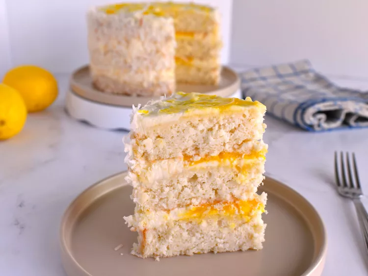

Lemon Coconut Cake

Description
This lemon coconut cake features three layers of rich coconut cake, a lemon curd filling,
and a delicious lemon cream cheese frosting.
Prep Time: 1hr Cook Time: 40 mins
Ingredients
Lemon Curd
- 6 large egg yolks, at room temperature
- 2/3 cup white sugar
- 2 tablespoons fresh lemon zest
- 3/4 cup freshly squeezed lemon juice
- 1 pinch salt
- 1/2 cup unsalted butter, cut into 8 pieces
Coconut Cake
- 2 1/2 cups sweetened coconut flakes
- 3 cups cake flour
- 2 1/2 teaspoons baking powder
- 1 teaspoon salt
- 1/4 teaspoon ground nutmeg
Instructions
- For lemon curd, add egg yolks, sugar, lemon zest,
lemon juice, salt, and butter to a small non-reactive
saucepan over medium-low heat. Cook, stirring constantly,
until mixture begins to simmer and has thickened, 8 to 12
minutes. Pour mixture through a fine mesh sieve set over a
bowl, using a spatula or wooden spoon to push the mixture
through. Cover with a piece of plastic wrap directly touching
the top of the curd, and refrigerate until chilled.
- For cakes, preheat the oven to 350 degrees F (175 degrees C).
Lightly grease 3 8-inch round cake pans, and line the bottoms
with parchment paper.